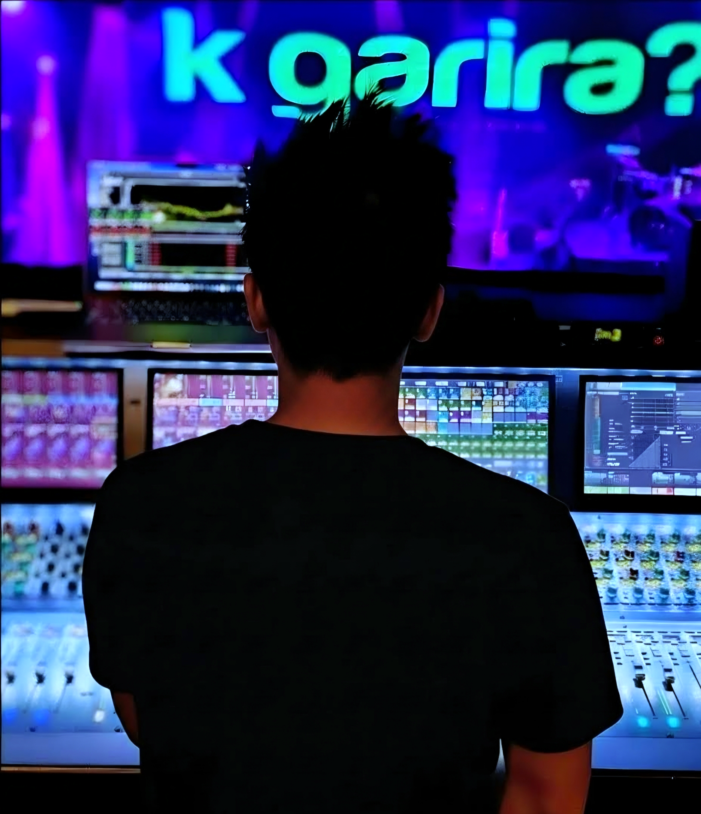

FOH Audio Engineer. Senior Software Engineer.
I build software and mix front-of-house audio.

With over a decade of experience as a software engineer, building everything from complex full-stack applications to iOS & Android apps, my passion for problem-solving extends beyond the screen and few years ago, I brought the same midset directly into the live audio realm.
Since then, I've spent my time on the road touring across the US and internationally, mixing FOH (front-of-house) or as an A2/RF engineer for Purna Rai & Dajubhaiharu, Sajjan Raj Vaidya, Bipul Chettri, 1974 AD, Sabin Rai & The Pharaoh, Raju Lama & The Angels Band, Bartika Eam Rai and more.
Whether I am mixing a full-house show, coordinating complex RF systems, tuning a venue's PA, or architecting a scalable backend, the mindset is the same: keep the routing clean, eliminate faillure points under pressure, and design systems that work perfectly every night.
Equipment & Production
I own and operate Ashdown Live LLC, providing elite touring flypacks, consoles, and scalable PA systems for touring events & local productions in Charlottesville area.